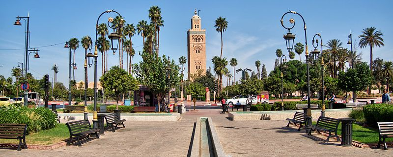

KIGALI
Visiter Kigali offre une immersion dans l'histoire et la culture du Rwanda, avec ses musées et ses monuments. Nichée au cœur de collines verdoyantes, la ville offre des paysages pittoresques et des vues panoramiques. Les voyageurs peuvent savourer une cuisine délicieuse, mélangeant plats locaux et internationaux, tout en appréciant l'hospitalité chaleureuse des habitants. Avec son développement urbain en plein essor, Kigali est une destination dynamique, offrant une expérience unique de la vie urbaine en Afrique.

MARRAKECH
Visiter Marrakech est une immersion envoûtante dans la culture, l'histoire et la beauté du Maroc. De la majestueuse place Jemaa el-Fna à la médina animée, en passant par les palais somptueux et les jardins luxuriants, chaque coin de la ville offre une expérience sensorielle unique. Les souks regorgent de trésors artisanaux, la cuisine marocaine ravit les papilles, et l'hospitalité des habitants vous enchantera. Marrakech est une destination inoubliable où chaque rue raconte une histoire et chaque instant éveille vos sens.